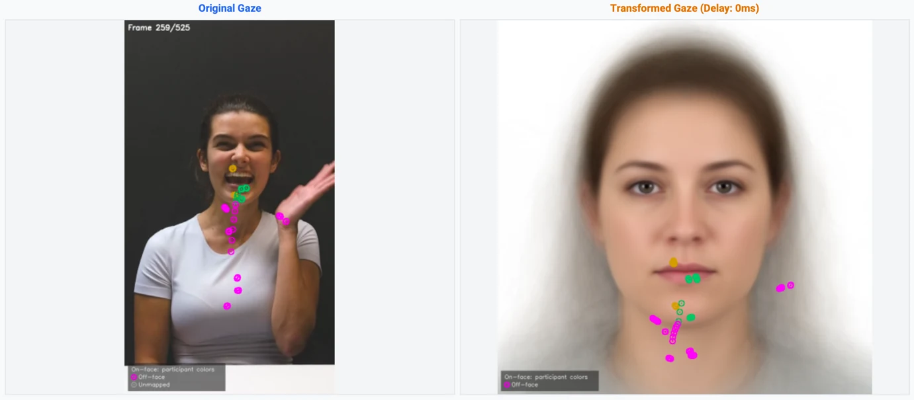
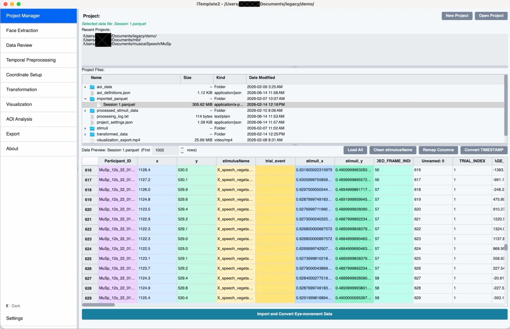
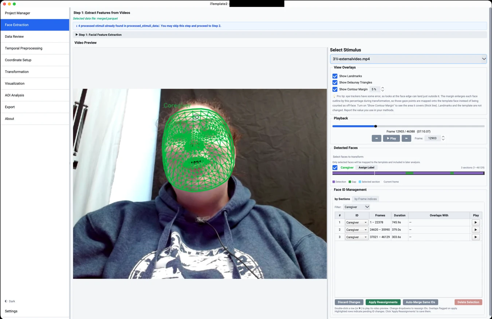
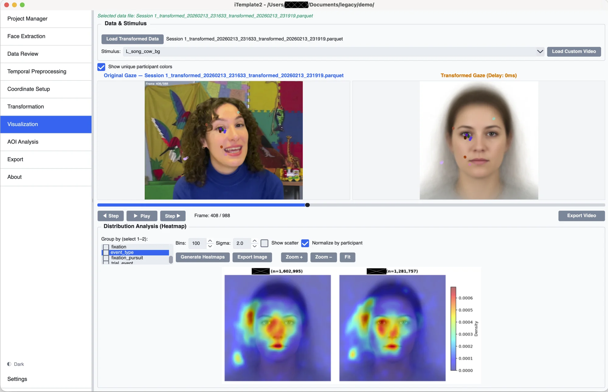
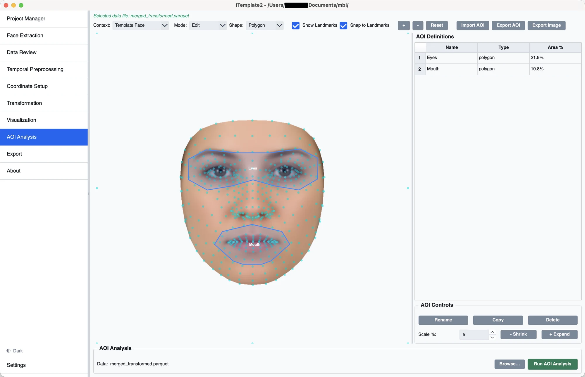
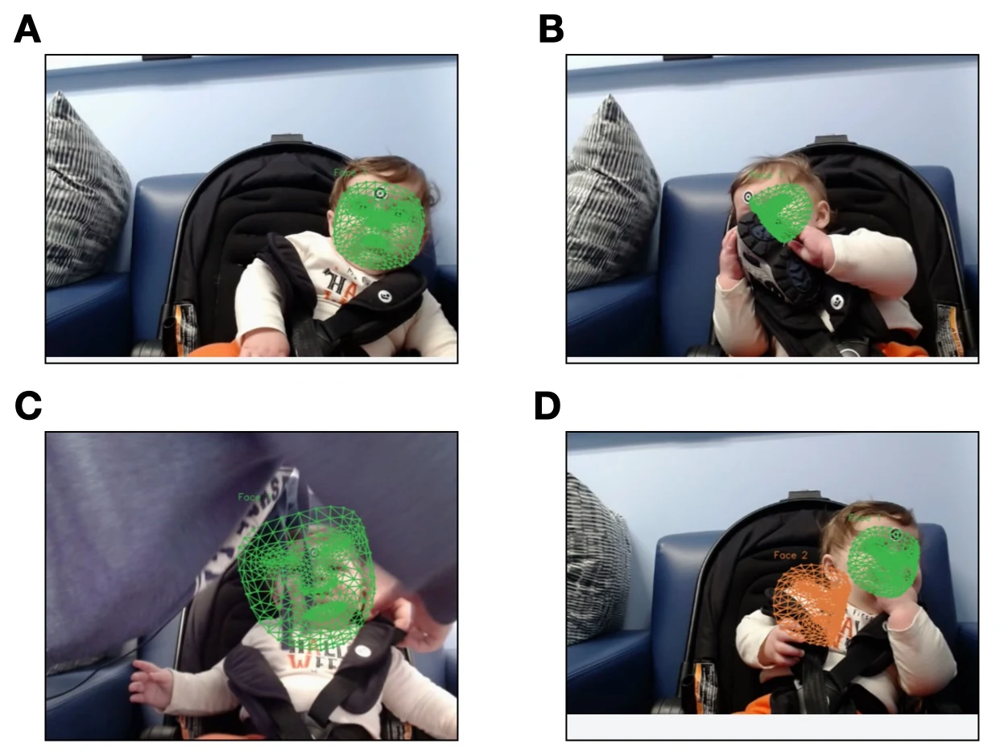
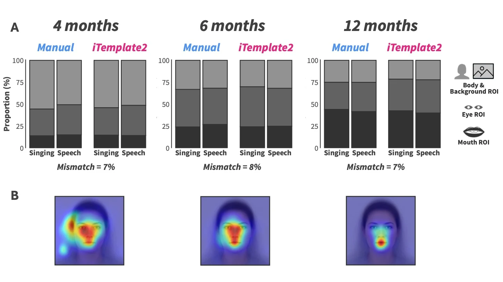
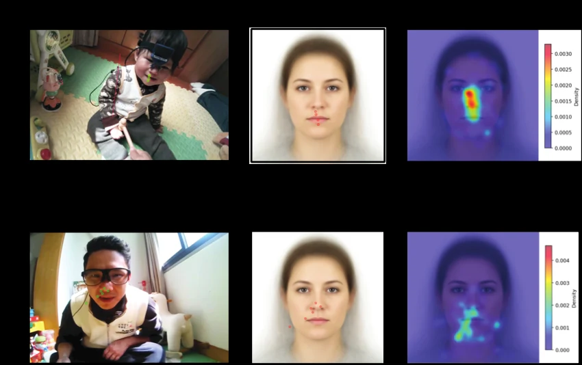

Eye movements on moving faces, in one common space.
iTemplate2 maps eye-tracking gaze onto a canonical face template, frame by frame. Define your areas of interest once, then apply them across faces, expressions, stimuli and participants.
In pressXiao, Román-Caballero, Fang, Ripley, Han & Trainor


A fixed AOI stops fitting the moment a face moves
Template-based registration answers this by projecting every gaze sample onto one canonical face, so a single set of AOIs is enough. The original iTemplate (Xiao & Lee, 2018) did this for static images, with semi-manual landmarks and a MATLAB dependency. iTemplate2 extends the idea to video, wearable recordings and several faces at once.
Four advances over the original iTemplate
Dynamic stimuli
Frame-wise coordinate transformation, with normalisation for wearable and scene-based eye-tracking data and temporal preprocessing for trial segmentation.
Automatic landmarks, many faces
478 facial landmarks per frame from MediaPipe's Face Landmarker, with multi-face tracking and identity persistence that reduce manual annotation.
Open and cross-platform
A graphical interface with no commercial dependencies, Apache Parquet storage for video-scale data and saved settings for reproducible analyses.
Richer visualisation
Interactive heatmaps, snap-to-landmark AOI definition, and facial blendshape parameters for concurrent expression analysis.
The workflow. The process begins with data import and automated, high-density facial landmark extraction (Steps 0–1). Data review and temporal and spatial preprocessing segment trials and normalise gaze coordinates for screen-based and wearable data (Steps 2–2.5b). The core transformation maps gaze onto a standard face template (Step 3). Researchers then visualise the registered data (Step 4), run AOI analysis (Step 5) and export for statistics (Step 6). Redrawn from paper figure 1.
One desktop app for the whole pipeline
Each step is its own page in a sidebar, so you can work from top to bottom without hunting through menus. Click any screenshot to enlarge it.








Triangles in, template coordinates out
Each face is divided into small triangles whose corners are facial landmarks (a Delaunay triangulation). For every frame, the pipeline finds the triangle that contains a gaze sample and describes the sample as weights on that triangle's three corners, its barycentric coordinates. Applying the same weights to the matching template triangle gives the mapped location.
Because the mapping is piecewise affine, it follows local facial deformation, such as the stretching of a mouth corner during a smile, to the extent that the landmarks and the gaze are accurately estimated. The paper uses "deformation invariance" only in this limited sense.
Which face did the gaze land on?
Many paradigms show several faces at once. Selecting faces for transformation decides which detected meshes are candidates. Every gaze sample is then labelled on_face, off_face or unmapped in the exported gaze_region column. The Visualization page can detect sections where facial meshes overlap and lets you review each ambiguous sample, assign it to a matching face or exclude it, without inferring which face is physically in front.
Off-face gaze can carry task-relevant information. Examine it with stimulus-space AOIs in the original video coordinates, for example the region between two interlocutors. These AOIs are currently static, so they may not follow people who move.


Automatic detection, with a human in the loop
A face can be missed or detected in the wrong place during occlusion, rapid head movement or extreme rotation, and tracking can swap or fragment IDs when a face reappears. Left uncorrected, gaze may be assigned to the wrong face or to incorrect locations.
iTemplate2 lets you inspect the affected frames, keep gaps as missing rather than interpolating across them, correct face IDs, remove unreliable detections, or re-run detection on a selected frame range. Corrected IDs can carry labels such as "Caregiver" and "Infant".
A face contour margin handles another source of error: because eye trackers have limited accuracy, gaze at the edge of a face can be recorded just outside the outline. The margin enlarges each outline by a chosen percentage during transformation, and is saved with the output so you can report it.
Four developmental eye-tracking projects
The paper uses these examples to show scope and feasibility. They are not benchmarks of accuracy against a ground truth.
Toddlers and emotional expressions
Fang and Xiao (2026) showed 12- to 24-month-old toddlers videos of actresses expressing emotions toward novel objects. Facial features moved continuously and varied across actresses, so fixed AOIs would likely have misclassified gaze. The 478-point mesh follows each expression, and snap-to-landmark AOIs give one consistent set of regions across actresses and emotions. The hand gesture in the figure at the top of this page is classified as off-face.
Live caregiver–infant interaction
Ripley et al. (2025) used dual eye tracking to capture the gaze of caregivers and 4- to 6-month-old infants during face-to-face communication. Each partner's face continuously shifts in scale, orientation and position, and caregivers lean in, turn away or are briefly occluded. iTemplate2's face ID controls and identity timeline let researchers merge tracks, swap IDs or mark gaps before transformation (see the tracking figure above).
Infant gaze to infant-directed speech and singing
Román-Caballero et al. (2025) followed infants at 4, 6 and 12 months. Manual frame-by-frame AOIs were estimated at about 240 hours for this study. Mapping all 40 videos onto one template put gaze in a common space, even though infants contributed valid data for different videos at different ages. AOI classifications differed from four trained manual coders in about 7% of frames, and the transformed data showed the reported shift from eye to mouth preference by 12 months. The 7% figure describes agreement for this example only, not general accuracy. Other automated AOI methods could give the same comparison; the template additionally allowed common heatmaps.


Face looking during free play at home
Fully mobile infants (11 to 20 months) and their caregivers wore eye trackers during unconstrained play. Scene cameras captured cluttered rooms in which faces constantly change scale, orientation and position. Automatic detection tracks the faces, with optional manual checks, and gaze on adult and infant faces is summarised on the same template. This shared registration does not show that landmarks are detected equally well on adult and infant faces, and feature-level reading depends on whether wearable gaze accuracy is sufficient for the size of the faces in the scene video.


A complement to existing AOI methods
Automatic and dynamic AOI tools already handle moving faces well. iTemplate2 is a different way of working, and is not meant to replace them.
Keyframe AOIs
Tobii Pro Lab and EyeLink Data Viewer interpolate 2D translation and scaling between keyframes you define. Between keyframes they do not follow non-rigid deformation or 3D head rotation.
Landmark-based AOIs
Hessels et al. (2018) and FaceTrack-AOI (Zhou et al., 2026) build AOIs from landmarks detected in each frame, in the coordinates of the original video.
Template space
iTemplate2 registers gaze to a common template, so AOIs are defined once, including regions landmarks do not delineate directly, such as both eyes combined, the forehead or the cheeks. It also supports heatmaps and spatial analysis, and pairs with pixel-wise statistics such as iMap4.
Template registration does not remove the decisions in AOI analysis. It moves some of them to the choice of template, the definition of AOIs on it, and the inspection of facial detections. Validity still depends on your research question, your gaze data quality and the accuracy of the facial mapping.
Interpret results with care
The transformation changes how gaze is represented. It does not change the gaze itself.
Gaze quality still limits you
Transformation does not improve accuracy or precision. In wearable and infant data, gaze error can match the distance between facial features, so be cautious near AOI boundaries and check whether conclusions change with the boundaries.
Landmarks are estimates
Detection degrades with occlusion, head rotation beyond about ±70°, low resolution and poor light. Infant faces are under-represented in the model's training data, so allow extra time for quality control.
The template shapes the output
The built-in template averages White female faces from the Chicago Face Database. It places faces of different shapes in one space but does not establish equal accuracy across ages or demographic groups. Custom templates are supported.
Off-face is not a face location
Peripheral template coordinates are for display only. Use stimulus-space AOIs for gaze between or beyond faces; these are currently static, and fully automatic identity tracking in crowded scenes is unresolved.
More in Interpreting Transformed Gaze.
Install and run
Requires Python 3.10 to 3.13 on macOS, Windows or Linux. The face model and template are included in the repository.
Prefer conda? Run conda env create -f environment.yml and conda activate iTemplate2 instead of step 2.
Linux: install xcb-util-cursor first (a PyQt6 requirement).
Free software. iTemplate2 is released under the GNU General Public License v3 or later. Use and modify it freely, including for research and commercial work. Your data and results are not affected. If you distribute a modified version, share it under the same license with its source.
New to the app? Read Before You Begin to check that you know your data's columns, timing and stimulus names, then follow Steps 0 to 6 in the sidebar.
The McMaster Baby Lab
iTemplate2 is developed by researchers at the McMaster Baby Lab, McMaster University. Learn more about the lab and its work on the lab website.
Visit babylab.mcmaster.ca